Chapter 6 Graphiques et ggplot
Les graphiques sont une composante de R qui est en partie à l’origine de son succès car on peut de très beaux et ce depuis la création de R.
6.1 Les graphiques de base
Certaines sont très simples d’autres un peu plus compliquées. Nous verrons dans un premier temps les graphiques de base c’est-à-dire qui ne nécessitent pas de charger un package.
6.1.1 Pour les graphiques de chiffres
Les premières fonctions présentées sont les plus usuelles comme les histogrammes.
Ce n’est pas très esthétique. Il y a des arguments aux fonctions qui permettent d’améliorer les choses.
Déjà changer les noms des axes X et y, notamment se débarasser de Frequency qui est un faux ami en français.
 Ensuite le titre :
Ensuite le titre :
Pour la couleur, c’est un peu plus compliqué. En effet il y a simple des couleurs qui répondent à leurs mots en anglais, la liste est là.
Mais les couleurs correspondent au codage web des couleurs qui sont en fait des hexadécimaux. Si vous voulez personnaliser plus les couleurs, je vous conseille le paquet RColorBrewer qui possède de jolis (et intelligents) assortiments de couleurs et de la lecture
 Ensuite il y a les boxplots ou boîtes à moustache pour les variables continues.
Ensuite il y a les boxplots ou boîtes à moustache pour les variables continues.

De même on arrange un peu :
Pour les boxplots on peut faire un peu mieux, par exemple pour segmenter par type de pathologies.
On passe la data.frame patient et on précise le nom de la variable qualitative qui doit “séparer” les tracés.
Le premier argument doit vous paraître un peu abstrait. En fait c’est une formule sous R. C’est l’équivalent de “patient=CIM2”.
A gauche du ~ on place la variable à expliquer et à droite la ou les variables explicatives. Ici on en a une de chaque côté.
Le graphique le plus simple serait le scatterplot. On aurait pu commencer par lui :
Cette fois on a deux arguments qui sont la variable numérique des x en premier et la variable numérique des y en second.
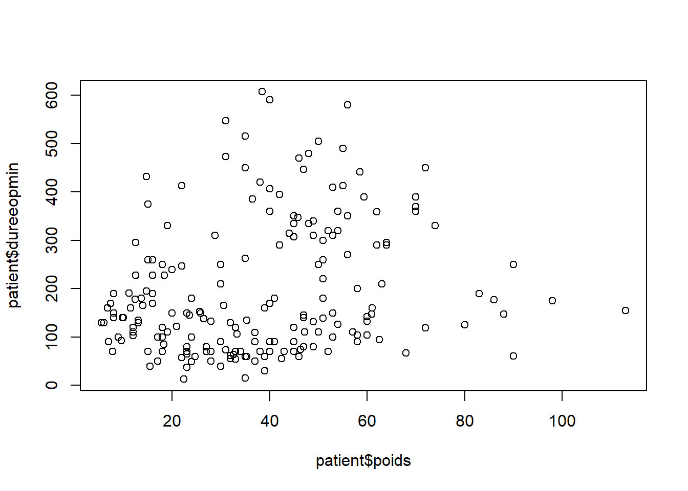
 Qui aurait pu s’écrire :
Qui aurait pu s’écrire :
Si on veut tracer une ligne pour la régression linéaire, il faut faire appel à la fonction lm qui calcule la régression et R se charge du reste.
coefficients <- lm(dureeopmin ~ poids,data=patient)
plot(patient$poids,patient$dureeopmin,xlab="Poids",ylab="Durée opération en minutes")
abline(coefficients) On voit ici que j’ai appellé abline après le plot. En effet, il est nécessaire
de faire un plot, un hist ou une boxplot avant pour que R initialise
le graphique notamment le calcul des coordonnées maximales et minimales.
On voit ici que j’ai appellé abline après le plot. En effet, il est nécessaire
de faire un plot, un hist ou une boxplot avant pour que R initialise
le graphique notamment le calcul des coordonnées maximales et minimales.
D’ailleurs on peut les spécifier nous mêmes :
coefficients <- lm(dureeopmin~poids,data=patient)
plot(patient$poids,patient$dureeopmin,xlab="Poids",ylab="Durée opération en minutes",
xlim=c(0,150),ylim=c(0,600),type="n")
abline(coefficients)
text(patient$poids,patient$dureeopmin,patient$UID)Pour sauvegarder un graphique, on doit le faire avant d’appeler la fonction principale et refermer le fichier avec la commande dev.off:
La dernière fonction à connaître pour les graphiques de base est le barplot.
Il s’agit de représenter des tableaux de contingence, le plus simple étant à une dimension :
 On peut lui passer un argument à deux dimensions mais la table devient tout de
suite difficile à lire.
On peut lui passer un argument à deux dimensions mais la table devient tout de
suite difficile à lire.

6.2 le tidyverse et ggplot
Vous pourrez comme précédemment entendre parler des graphiques de base de même que des graphiques lattice mais le choucou du tidyverse c’est ggplot2.
C’est un éco-système de packages qui permet de faire la plupart des graphiques plus simplement et qui est basé sur le paquet gplot2.
Un livre gratuit lui est consacré là et une page en français là
On va reprendre notre grammaire. Il faut saisir que ggplot2 fonctionne par couche. Sur une base, vous additionner des couches qui apporte la personnalisation des graphiques.
6.2.1 La base
Au tout départ, il faut lui passer une data.frame, c’est le passage obligé.
 Ensuite on précise les variables de travail. Pour l’histogramme, on en a qu’une :
Ensuite on précise les variables de travail. Pour l’histogramme, on en a qu’une :

Vous pouvez constater, que le logiciel a calculé et positionner les légendes pour créer un graphique avec poids comme variable des abscisses (horizontal).
On personnalise en demandant un graphique de type histogramme. En additionnant littéralement:

Pour modifier les limtes du graphiques, on rajoute :
ggplot(patient,aes(poids))+geom_histogram()+
scale_x_continuous(limits = c(0,150)) +
scale_y_continuous(limits = c(0,20))
Si on veut modifier le nombre de barres verticales (la précision de l’histogramme), on précise l’option dans la couche de l’histogramme :
 Pour les titres, c’est pareil, on ajoute des couches :
Pour les titres, c’est pareil, on ajoute des couches :
ggplot(patient,aes(poids))+geom_histogram()+
scale_x_continuous(limits = c(0,150)) +
ggtitle("Poids des patients") +
xlab("Poids") +
ylab("Effectifs") On peut ajouter des propriétés esthétiques comme la couleur, par exemple :
On peut ajouter des propriétés esthétiques comme la couleur, par exemple :
ggplot(patient,aes(poids))+geom_histogram(fill ="lightblue", colour = "black")+
scale_x_continuous(limits = c(0,150)) +
ggtitle("Poids des patients") +
xlab("Poids") +
ylab("Effectifs")Là où ggplot2 sort du lot, c’est sa capacité à segmenter et à représenter avec une bonne grammaire graphique
ggplot(patient,aes(poids,fill=sexe))+geom_histogram(color="black")+
scale_x_continuous(limits = c(0,150)) +
ggtitle("Poids des patients") +
xlab("Poids") +
ylab("Effectifs")
On a l’ajout de couleurs ou alors deux graphiques avec des unités bien choisies:
ggplot(patient,aes(poids,fill=sexe))+geom_histogram(color="black")+
scale_x_continuous(limits = c(0,150)) +
ggtitle("Poids des patients") +
xlab("Poids") +
ylab("Effectifs") +
facet_grid(sexe ~ .)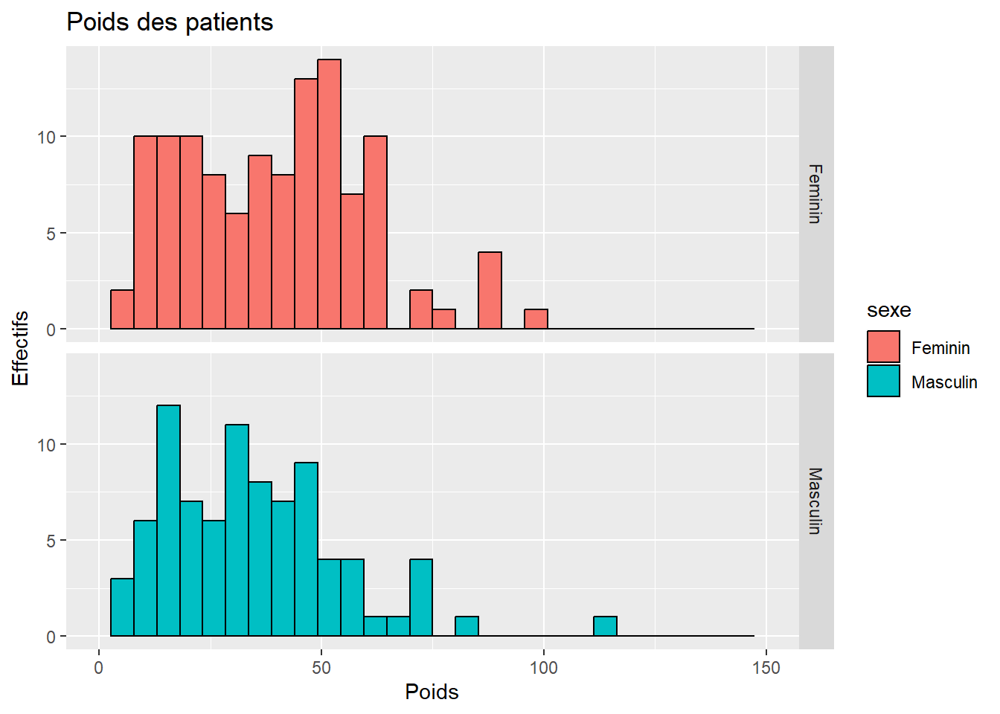
On a de nouveau une formule. Cette fois, c’est à gauche du ~ les lignes et à droite les colonnes :
ggplot(patient,aes(poids))+geom_histogram(color="black")+
scale_x_continuous(limits = c(0,150)) +
ggtitle("Poids des patients") +
xlab("Poids") +
ylab("Effectifs") +
facet_grid(sexe ~ Hopital)
On peut vouloir calculer la densité et non les effectifs dans ce cas :
6.2.2 Les autres graphiques
Le boxplot :
ggplot(patient,aes(x=poids,fill=sexe))+geom_boxplot()+
ggtitle("Poids des patients") +
xlab("Poids") +
ylab("Densité") +
facet_grid(Hopital ~ .)
ggplot(patient,aes(x=sexe,y=poids))+geom_boxplot()+
ggtitle("Poids des patients") +
xlab("Poids") +
ylab("Densité") +
facet_grid(Hopital ~ .)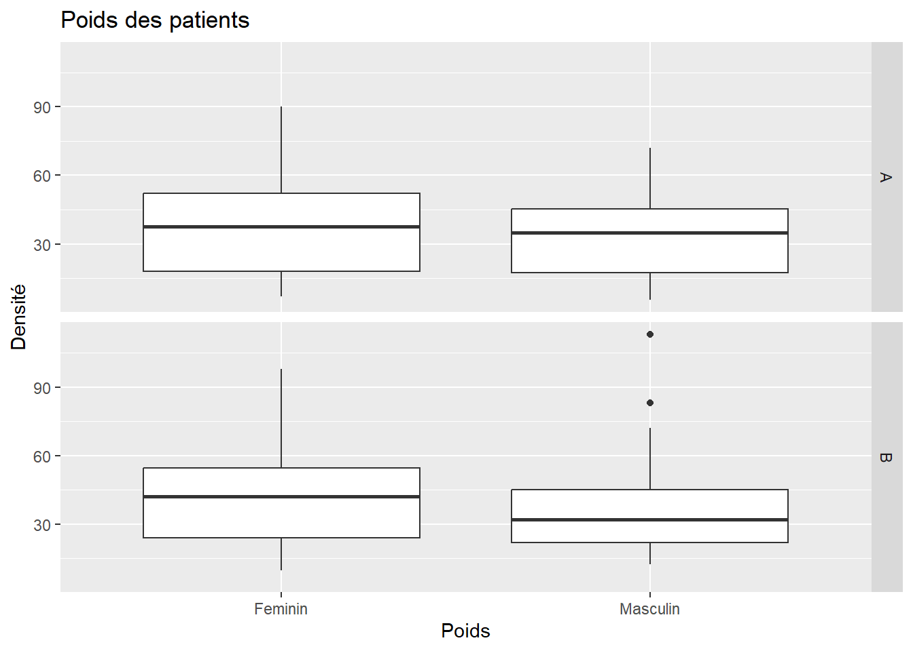
ggplot(patient,aes(poids))+geom_boxplot()+
ggtitle("Poids des patients") +
xlab("Poids") +
ylab("Densité") +
facet_grid(sexe ~ Hopital)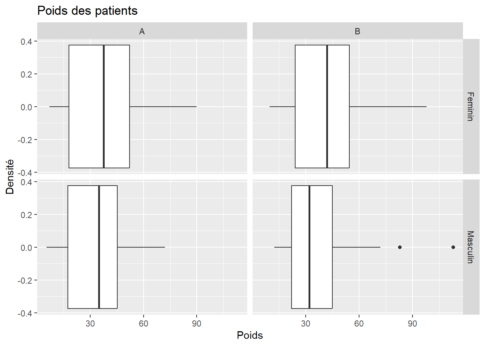
D’où des graphiques en scatterplot comme :
ggplot(patient,aes(x=poids,y=dureeopmin))+geom_point(aes(col=sexe))+
ggtitle("Caractéristiques des patients") +
xlab("Poids") +
ylab("Durée de l'opération en minutes") 
ou en rajoutant plein de trucs :
ggplot(patient,aes(x=poids,y=dureeopmin))+geom_point(aes(col=sexe))+
ggtitle("Caractéristiques des patients") +
xlab("Poids") +
ylab("Durée de l'opération en minutes") +
facet_grid(CIM2 ~ Hopital)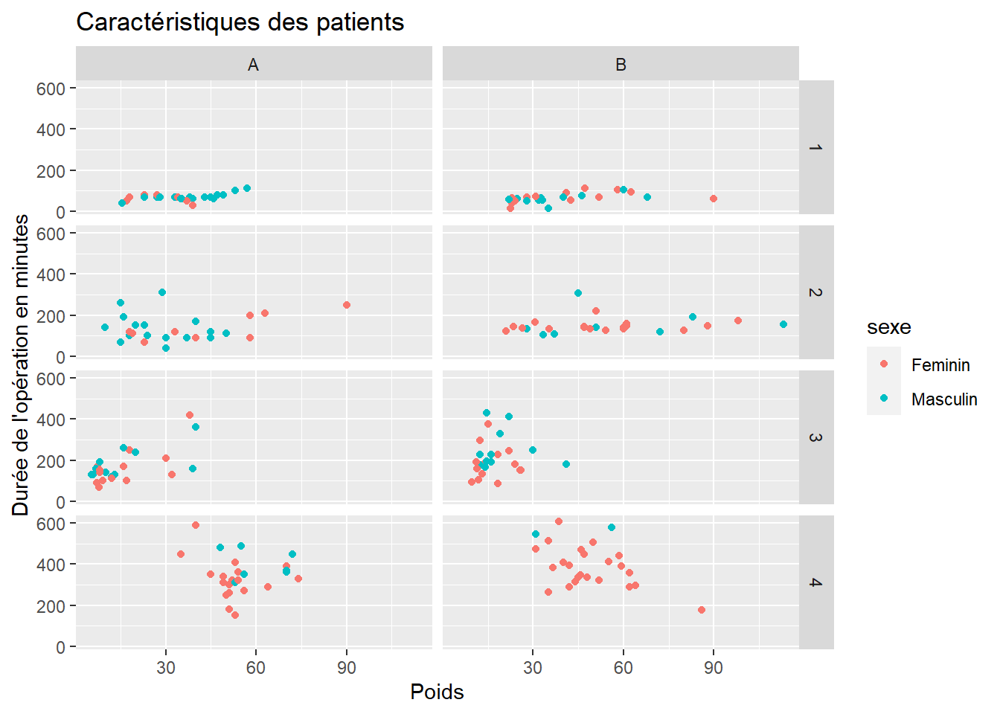
Si on veut ajouter une variable de gravité inversée par rapport à la variable CIM2, avec 1 l’opération la plus grave et 4 l’opération bénigne:
patient$Gravité <- LETTERS[5 - patient$CIM2]
ggplot(patient,aes(x=poids,y=dureeopmin))+geom_point(aes(col=sexe))+
ggtitle("Caractéristiques des patients") +
xlab("Poids") +
ylab("Durée de l'opération en minutes") +
facet_grid(Gravité ~ Hopital)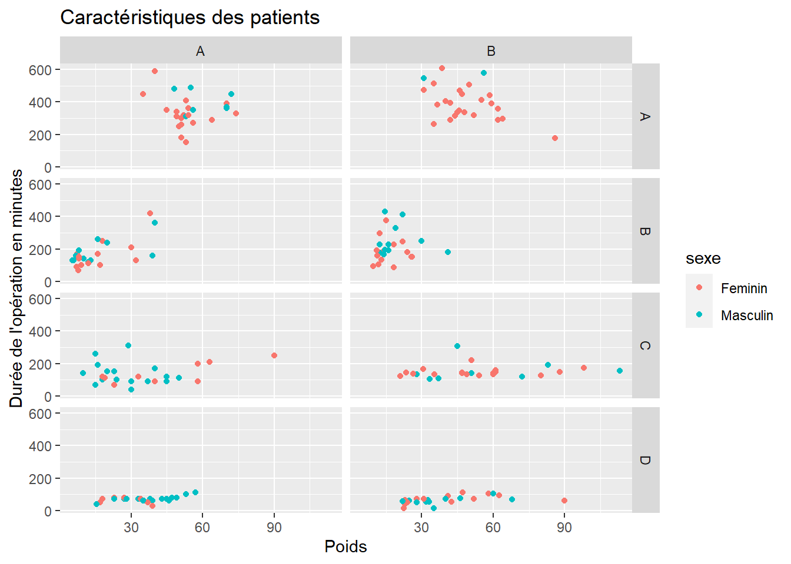
Pour rajouter une droite de régression :
ggplot(patient,aes(x=poids,y=dureeopmin))+geom_point(aes(col=sexe))+
geom_smooth(method="lm") +
ggtitle("Caractéristiques des patients") +
xlab("Poids") +
ylab("Durée de l'opération en minutes") +
facet_grid(CIM2 ~ Hopital)Des courbes de tendances :
ggplot(patient,aes(x=poids,y=dureeopmin))+geom_point(aes(col=sexe))+
geom_smooth() +
ggtitle("Caractéristiques des patients") +
xlab("Poids") +
ylab("Durée de l'opération en minutes") +
facet_grid(CIM2 ~ Hopital)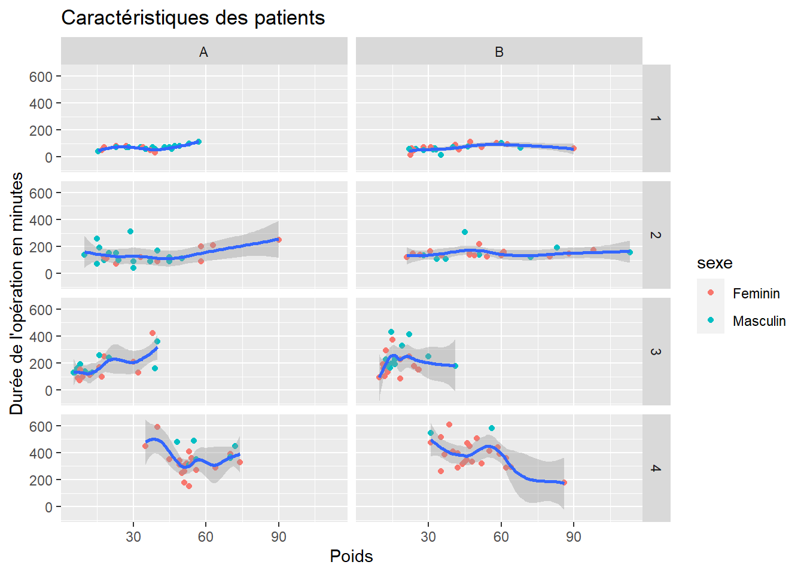
Sans l’intervalle de confiance :
ggplot(patient,aes(x=vitaux,y=totalechelle))+geom_point(aes(col=sexe))+
geom_smooth(se=FALSE) +
ggtitle("Caractéristiques des patients") +
xlab("Poids") +
ylab("Durée de l'opération en minutes") +
facet_grid(CIM2 ~ Hopital)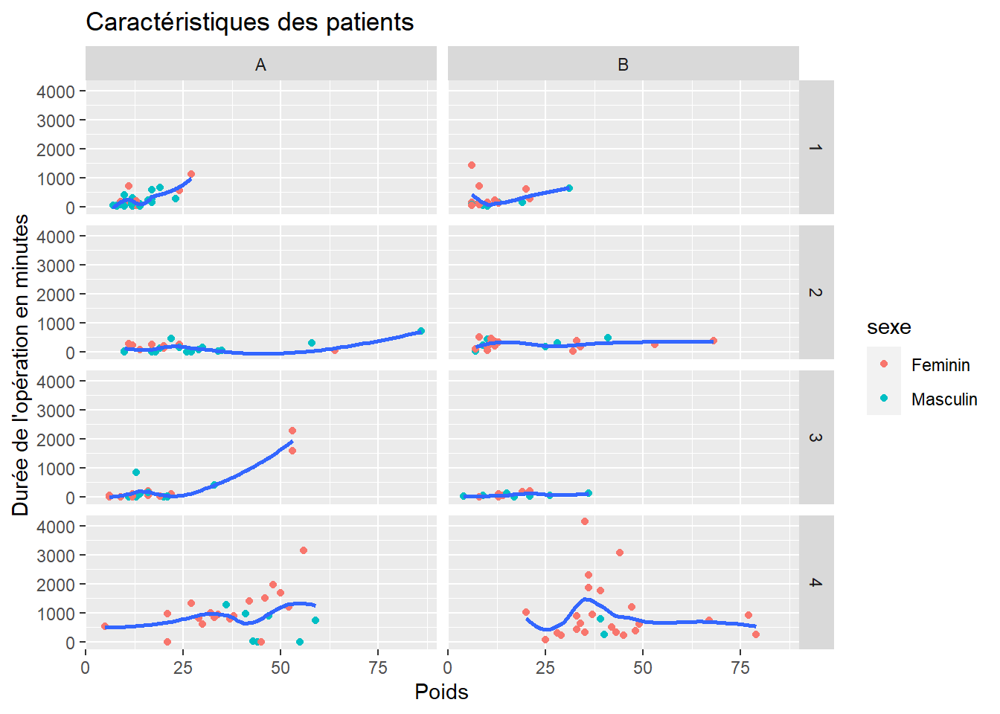
Avec l’intervalle de confiance et la droite de régression :
ggplot(patient,aes(x=dureeopmin,y=totalechelle))+geom_point(aes(col=sexe))+
geom_smooth(method="lm",se=FALSE) +
ggtitle("Total des échelles de douleur et durée opération") +
xlab("Durée de l'opération en minutes") +
ylab("Total des échelles de douleur") +
facet_grid(CIM2 ~ Hopital)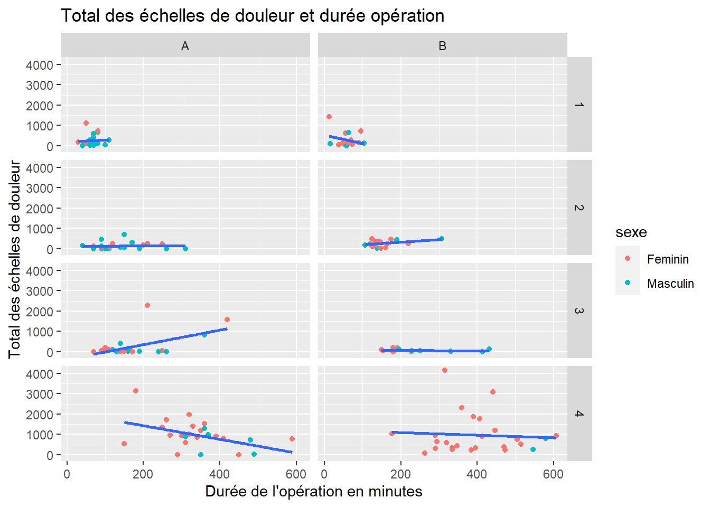
Pour ajouter des étiquettes, il existe la librairie ggrepel qui permet de faire en sorte que la superposition des étiquettes soit minimale :
ggplot(patient,aes(x=dureeopmin,y=totalechelle,label=UID))+geom_point(aes(col=sexe))+
geom_smooth(method="lm",se=FALSE) +
geom_text_repel() +
ggtitle("Total des échelles de douleur et durée opération") +
xlab("Durée de l'opération en minutes") +
ylab("Total des échelles de douleur") 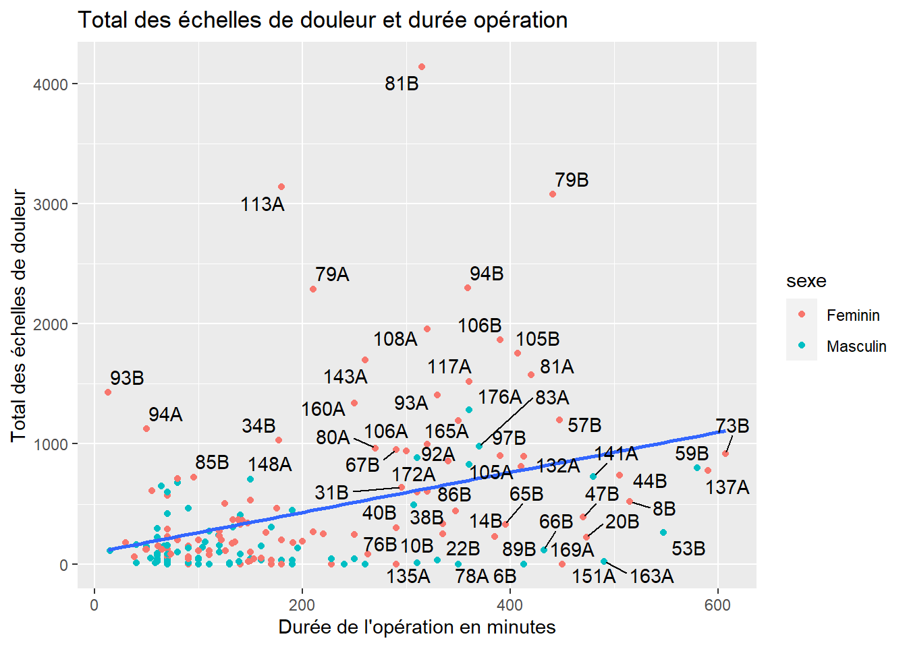
Evidemment toutes les étiquettes ne sont pas dessinés car il y a trop d’individus mais cela permet de repérer les individus atypiques.
6.2.3 Tableaux de contingences
Pour les tableaux de fréquences, on peut faire très simple :
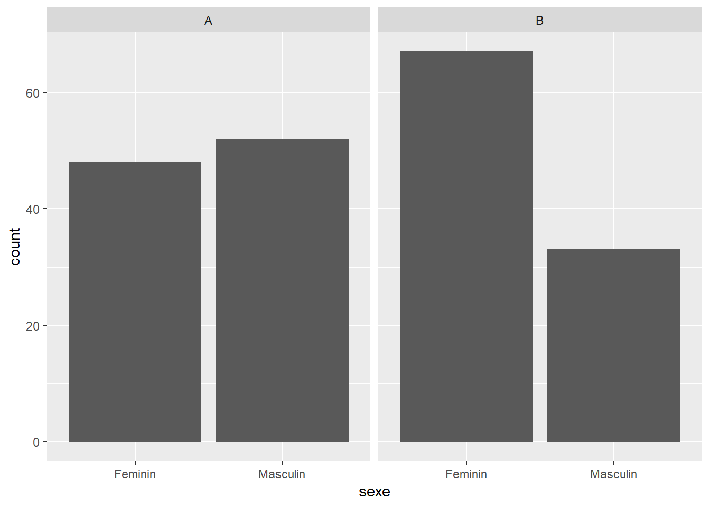 Là où ggplot2 commence à devenir compliqué, c’est que geom_bar ne va pas marcher car il faut lui fournir la data.frame avec les statistiques en ligne.
Soit :
## sexe CIM2 effectif
## 1 Feminin 1 20
## 2 Masculin 1 30
## 3 Feminin 2 26
## 4 Masculin 2 24
## 5 Feminin 3 28
## 6 Masculin 3 22
## 7 Feminin 4 41
## 8 Masculin 4 9Pour faire ce tableau, il faut faire appel au package reshape2.
##
## 1 2 3 4
## Feminin 20 26 28 41
## Masculin 30 24 22 9De ce tableau on passe au long en une commande :
Il faut spécifier le nom à donner aux deux variables et spécifier le résultat du croisement des deux variables qui est le nombre d’observations c’est-à-dire le contenu de chaque cellule de tableau.
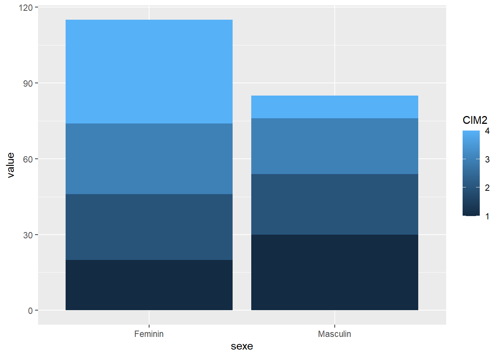
Je dois faire de CIM2 une variable qualitative explicitement. En effet, CIM2 est numérique (un entier de 1 à 4). Aussi quand je donne le CIM2 à l’argument fill= il ne sait pas s’il s’agit de la couleur (qui peut être un code numérique aussi) ou d’une variable qualitative.
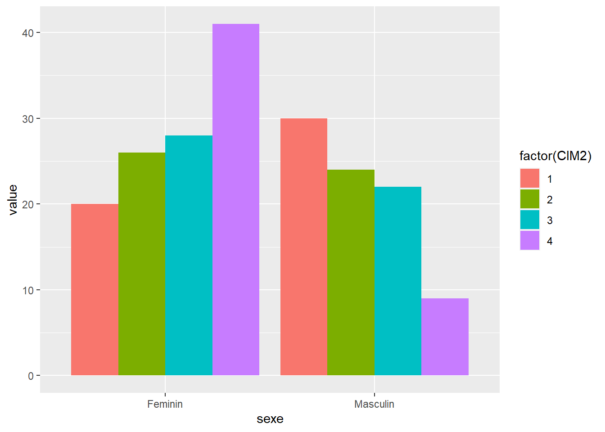
D’où le graphique :
tableau <- table(patient$Hopital,patient$sexe,patient$CIM2)
long <- melt(tableau,varnames = c("Hopital","sexe","CIM2"),value.name = "effectif")
ggplot(long,aes(x=CIM2,y=effectif,fill=sexe))+
geom_bar(position = "dodge",stat="identity")+
facet_grid(Hopital ~ . )Pour sauvegarder un graphique ggplot2, la syntaxe est différente et surtout on l’appelle une fois que le graphique est terminé, c’est-à-dire en dernier :
Et ainsi de suite…
6.2.4 Les thèmes
Les graphiques de ggplot peuvent changer selon des thèmes qui définissent des styles de graphique différents. Celui à retenir est minimal qui fait que le graphique est épuré au maximum :
tableau <- table(patient$Hopital,patient$sexe,patient$CIM2)
long <- melt(tableau,varnames = c("Hopital","sexe","CIM2"),value.name = "effectif")
ggplot(long,aes(x=CIM2,y=effectif,fill=sexe))+
geom_bar(position = "dodge",stat="identity")+
facet_grid(Hopital ~ . ) + theme_minimal()Il y a 10 à 20 thèmes par défaut et il y a des variantes supplémentaires et de quoi personnaliser ses propres thèmes dans le package ggthemes.
6.3 Liens
Il y a de nombreuses galleries sur le web avec toutes les possiblités offertes par les graphiques de base comme les graphiques avec ggplot2.
On peut en parcourir ensemble…
tableau <- dcast(patient, UID + sexe ~ Hopital, value.var = "nbechelle")
tableau$poids <- ifelse(!is.na(tableau$A),tableau$A,tableau$B)
ggplot(tableau, aes(x=nbechelle) ) +
geom_density( aes(x = A, y = ..density..), fill="#69b3a2" ) +
geom_label(aes(x=90, y=0.01, label="Hopital A"), color="#69b3a2") +
geom_density( aes(x = B, y = -..density..), fill= "#404080") +
geom_label(aes(x=90,y=-0.01, label="Hopital B"), color="#404080")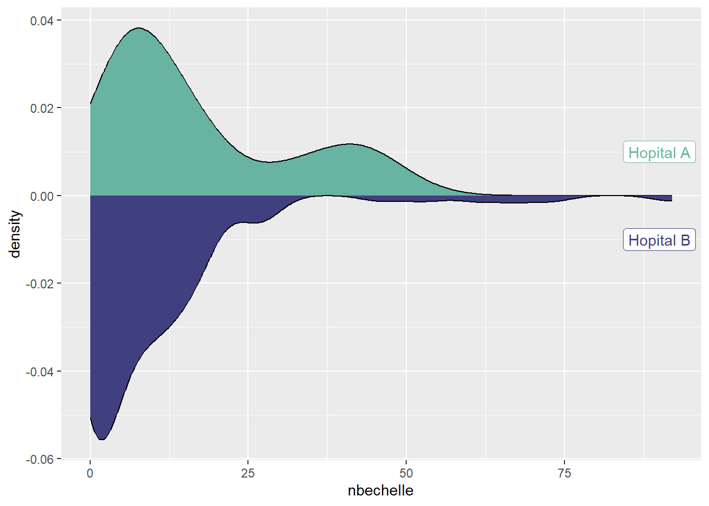